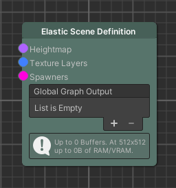
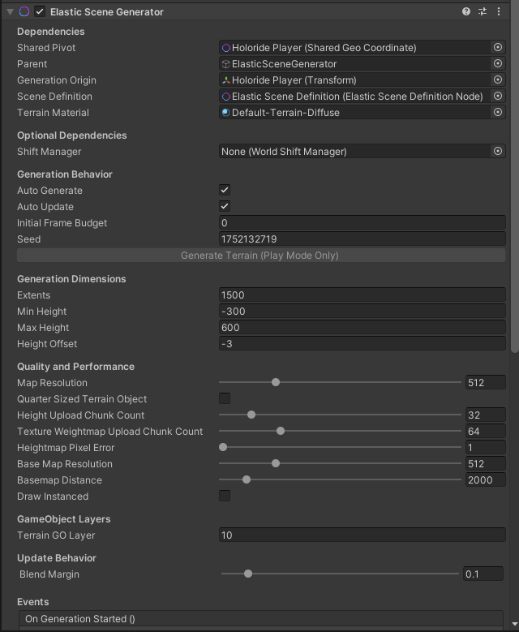
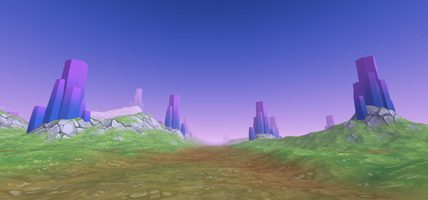
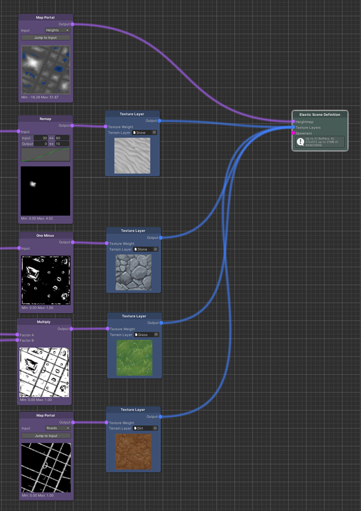
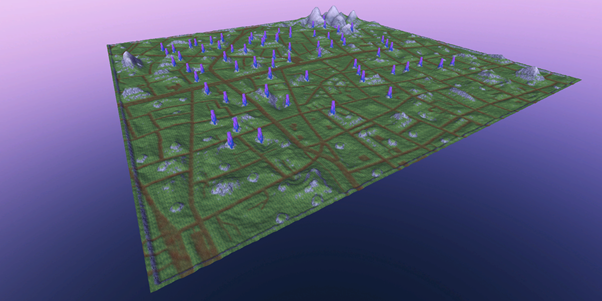
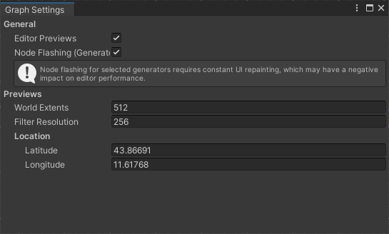

Graph Overview
Using the project folder’s context menu (Create > holoride > Elastic Graph), a new graph can be instantiated. Nodes can be added by pressing the space bar or using the right-click context menu on the graph window’s background. Same-colored ports can be connected by dragging the mouse from the output to the input port. Small exclamation marks next to node ports depict a missing mandatory input.
It is important to understand that the environment the Elastic Graph produces is always based on an initial set of data, which is then modified based on functions the user defines in the graph system. There are two major types of source nodes, to generate initial data sets, and associated modifier nodes, to alter these data sets: Map nodes, which can be seen as 2D grayscale textures, and Pose Set nodes, which represent containers of Position-Rotation tuples and serve as information for where to spawn objects. Other nodes such as Spawners will use the modified data sets to define how engine related content like game objects is created at runtime.
Tip
Every node in the Elastic Graph system can be renamed to your liking via a right-click context menu.
Elastic Scene Definition
The Elastic Scene Definition is the core node of every Elastic Graph. This is where all the data lines end. Ultimately it is used to communicate the output of the graph system towards the runtime pipeline of the Elastic Scene Generator component.

Important
The Elastic Scene Definition asset has to be referenced on the Elastic Scene Generator component.
Using the Graph in the Scene
The Elastic Scene Generator is the central component to execute an Elastic Graph at playtime. It will update the scene as the Generation Origin moves and is responsible for terrain generation.

Terrain
In order to keep things procedural, the terrain’s appearance can be modeled by using map nodes in contrast to traditional manual terrain painting. Maps can contain any float value and therefore be used to define the heights and texture weights (aka control texture) of a Unity Terrain. The Elastic SDK utilizes Unity’s default Terrain Layer assets referenced by Texture Layer nodes. The heightmap can also be used to determine the spawn height of objects that should spawn on the terrain surface.



Settings
The Graph Settings window can be accessed from the top-left corner of the graph window. It contains options related to the preview functionality and the processing state of the nodes, which is indicated by flashing when enabled. The WorldExtents, FilterResolution, and Location are independent from the scene the graph is used in. If an Elastic Scene Generator is using an opened graph, the previews will be replaced by the actual buffers that are used during play mode.
